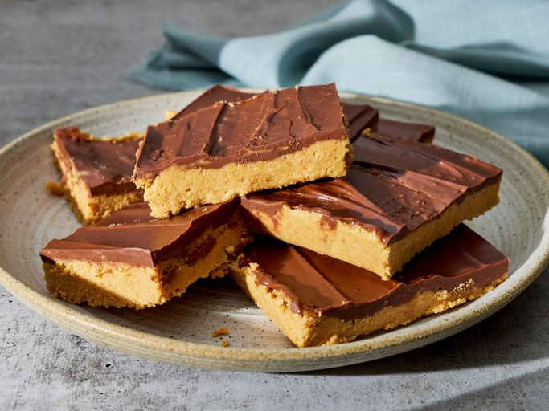

Peanut Butter Bars Recipe

Description
These peanut butter bars taste just like peanut butter cups.
Ingredients
- 2 cups graham cracker crumbs
- 2 cups confectioners' sugar
- 1 cup butter or margarine, melted
- 1 cup peanut butter
- 1 ½ cups semisweet chocolate chips
- 4 tablespoons peanut butter
Steps
-
step one
Gather all ingredients.
-
step two
Mix together graham cracker crumbs, confectioners'
sugar, butter or margarine, and 1 cup peanut butter in a medium bowl until well-blended.
-
step three
Press evenly into the bottom of an ungreased 9x13-inch pan.
-
step four
Place chocolate chips and 4 tablespoons peanut butter in a microwave-safe bowl.
Microwave on high, stirring every 15 seconds, until smooth.
-
step five
Spread mixture over crust.
-
step six
Refrigerate for at least 1 hour before cutting into 12 squares.
Home